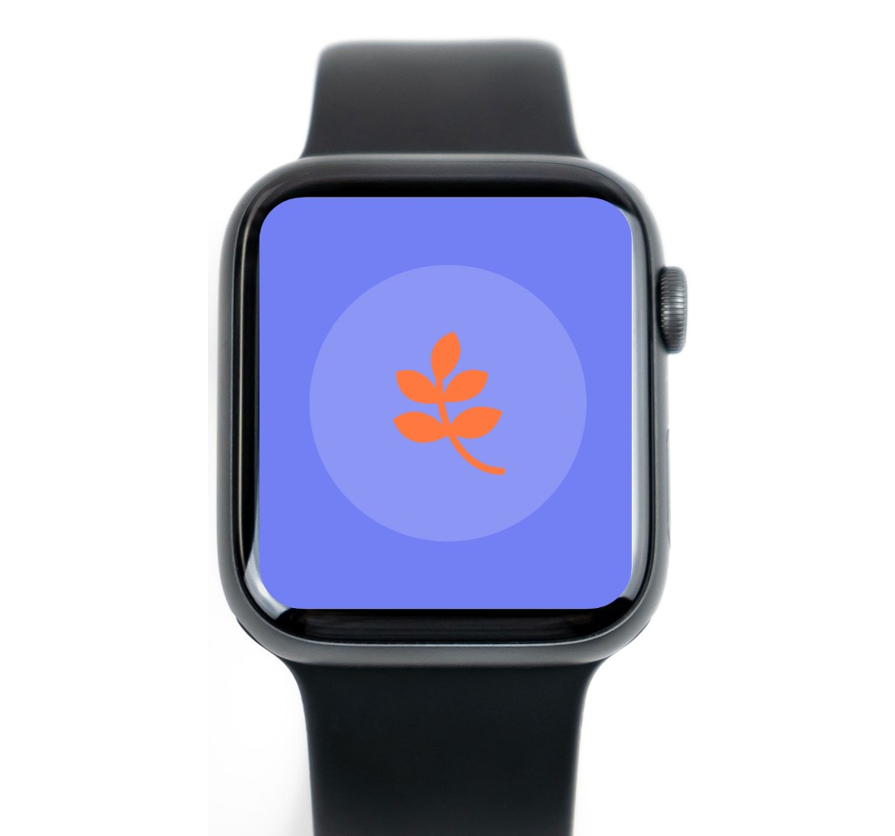
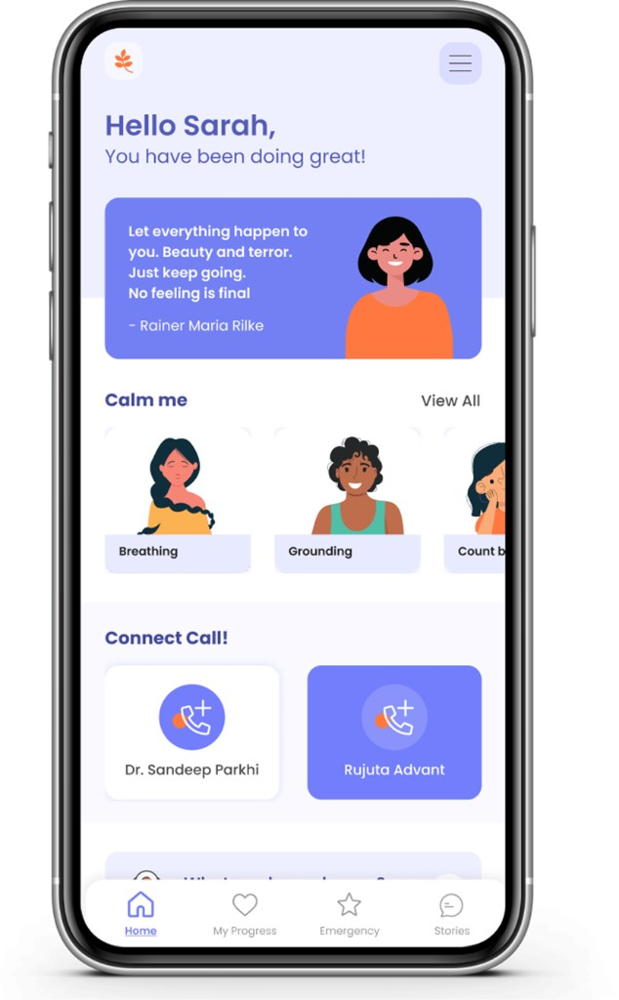
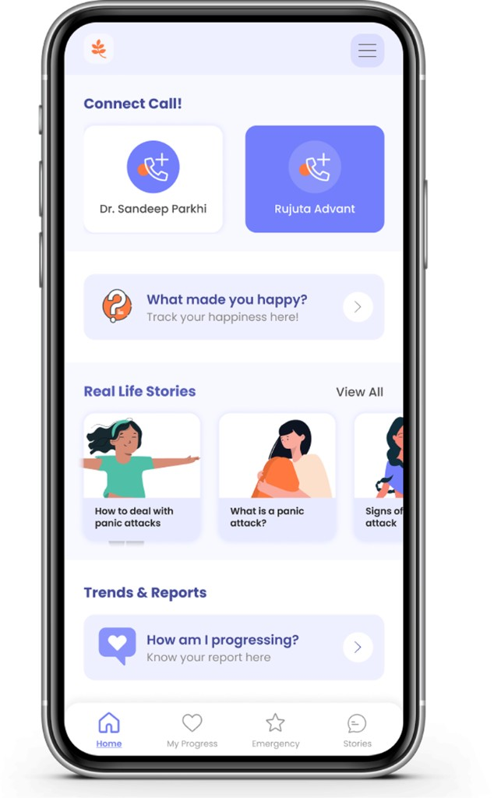
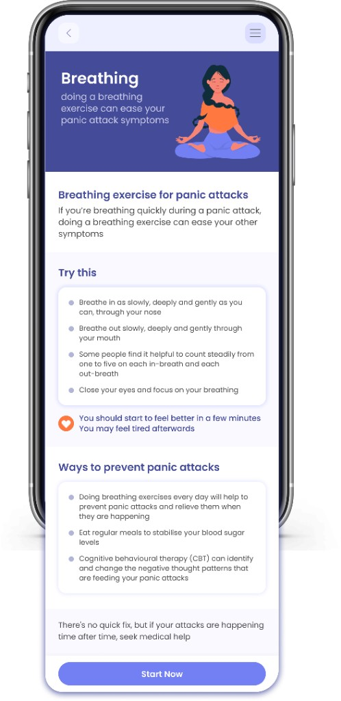
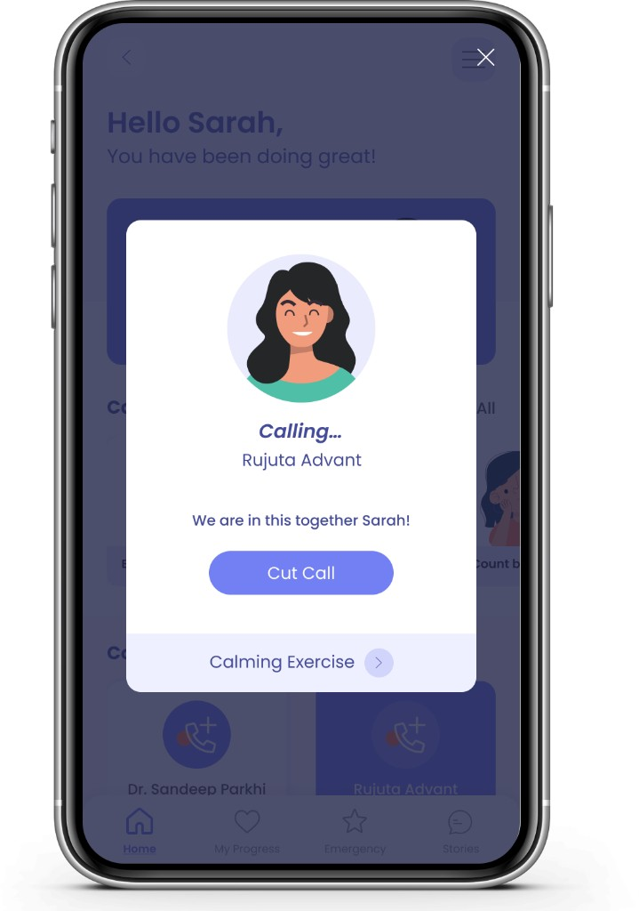
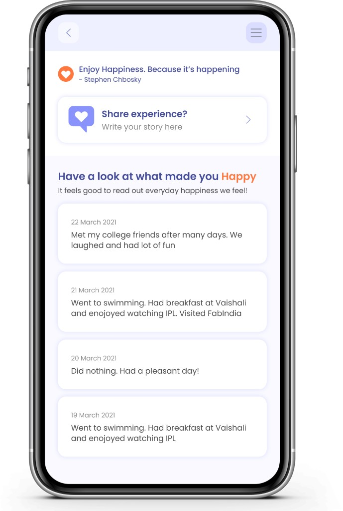
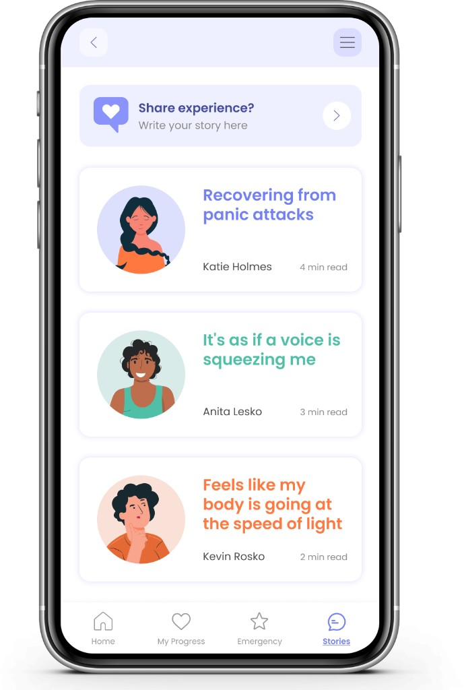
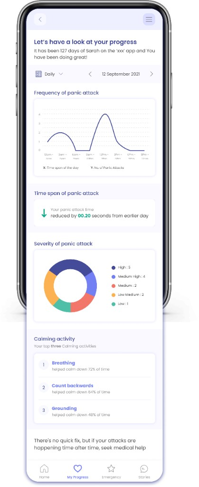

Empathi
Healthy Mind, Healthy Life!
What are Panic Attacks?
A panic attack is a sudden surge of intense fear or discomfort, accompanied by physical symptoms such as rapid heartbeat, shortness of breath, and chest pain
Panic attacks can occur unexpectedly or be triggered by specific situations, and they are a key feature of panic disorder.
Brief description
Empathi connects to your wristband & responds in real time to the panic attacks and suggests calming exercises
What
By using the Blood Oxygen Sensor, identify potential panic attacks and trigger the user App suggests calming activities
Why
Panic attacks experience is not a pleasant one! Aim is to identify triggers, calm down and see your progress
Whom
Empathi is for every mental health fighter, their closed ones who can get their progress
Where
Blood Oxygen Sensor can be embedded in the smart watches
Empathy + I = Empathi
Empathi: Your Calm Buddy
In a fast world, Empathi is here to be your digital friend The name 'Empathi' means understanding and care, for yourself and from the app to you!

What Empathi Does
These are the primary features of Empathi that I intended to focus on
Stop Panic Attacks
Empathi works with a special watch that keeps an eye on your blood oxygen. If there's a chance of a panic attack, the watch tells the app, and it helps you before things get worse
See How You're Doing
It doesn't just help when things are tough; it keeps track of how you're feeling. This can be useful for you or if you want to share with someone helping you
Smart Warnings
The watch tells you early if something might go wrong. Empathi wants to make sure you know what's happening with you
Just for You
Empathi learns from what you like. So, over time, it gives you things that work best for you
Relaxing Moves
When the app knows you might be stressed, it sends you easy things to do on your phone. These could be breathing exercises or simple activities to help you calm down
How it works ?
This is an easy, step-by-step walk through the process
Step 1
Blood Oxygen Sensor recognizes panic attacks & triggers Empathi
Step 2
Empathi app suggests calming activites / emergency help
Step 3
Do calming down activities or get emergency help to feel better
Step 4
Track your progress & status that can be shared
Understanding Panic Attacks and Oxygen Levels
All these discoveries from the research are fascinating!

Wondering About Panic Attacks
While working on my design, I got curious about what happens when someone has a panic attack. I wanted to know the details to make something helpful
Big Discovery
Oxygen Levels Change: I found out that during a panic attack, the amount of oxygen in your blood can change. This became important for me because if we can keep an eye on these changes, we might help stop panic attacks before they get worse
Figuring Out How to Watch Oxygen Levels
I looked into different ways to check how much oxygen is in someone's blood. My goal was to find sensors or methods that could do this in a simple and effective way
Sensors and Watching Methods
Good news - there are gadgets and ways to do this! Some special watches with smart sensors can quietly check oxygen levels. This means we can keep track without bothering the person, making it a useful and easy way to look out for their well-being.
Features
These are the features I considered for the initial version of Empathi

Positive Start
Every time you log in, Empathi greets you with a new motivating quote, setting a positive tone for your day.
Calming Activities
These activities kick in automatically when the watch senses something might be wrong, guiding you through moments of stress.
Connect with Your Support System
In emergencies, Empathi lets you reach out. You can quickly call your therapist or loved ones directly through the app, ensuring you're not alone when you need someone.
Emergency Assistance
Empathi keeps you on track with important reminders, especially for SOS medications. It also offers personalized calming activities and stores your prescription details, making emergency situations more manageable.
Happiness Tracker
Share moments of joy! Empathi lets you post happy experiences, and you can revisit these uplifting stories whenever you need a boost
Real-Life Stories
Learn from others. Empathi features real-life stories from people who've faced panic attacks. This not only helps you understand different coping methods but also builds awareness and acceptance
Progress report
Keep an eye on your mental health journey. Empathi shows you graphs and data related to panic attacks, helping you track your progress over time


Who is Empathi for
Empathi is designed for everyone because a sound mind contributes to a wholesome life

People with Mental Health Issues
If you've been told you have a mental health issue or you sometimes get really stressed, Empathi is like a friend that helps you out when things get hard.
Doctors and Therapists
It's like an extra tool they can suggest to help their patients feel better. Empathi works together with professionals to support people in taking care of their mental health.
Calming Exercises
Breathing
- Deep: Inhale slowly through your nose, filling your lungs, and exhale gradually through your mouth
- Focused Attention: Concentrate on your breath, allowing it to be a rhythmic and calming anchor
- Reduced Stress: Controlled breathing activates the body's relaxation response, helping alleviate stress
Grounding
- Sensory Awareness: Use your senses to observe and describe
- Calming Effect: Connecting with your environment helps create a sense of safety and stability.
Reverse Number Counting
- Mind Diversion: Counting backward engages your mind, diverting attention from anxious thoughts.
- Mental Rhythm: The reverse counting process provides a repetitive and soothing mental pattern.
- Stress Relief: This activity interrupts escalating stress, promoting a sense of control and calmness.

Connect
Emergency Assistance
In emergencies, Empathi allows you to reach out by quickly calling your therapist or loved ones within the app, ensuring support when needed. Rujuta is designated as the emergency contact.

Calming Activities Access
Additionally, users can seamlessly navigate to calming activities directly from this feature for added support.

Happiness tracker

Share Joyful Moments
Empathi encourages you to share moments of happiness by posting uplifting experiences.
Revisit Uplifting Stories
You can return to these joyful stories whenever you need a mood boost, creating a positive and uplifting space.

Real-life stories
Learn from Shared Experiences
Explore real-life stories from individuals who have faced panic attacks on Empathi, gaining valuable insights into different coping methods.
Building Awareness and Acceptance
By featuring these personal narratives, Empathi contributes to building awareness and fostering acceptance of the challenges associated with panic attacks.

Progress report
Tracking Mental Health Journey
Empathi facilitates the monitoring of your mental health journey by providing insightful graphs and data related to panic attacks.
Panic Attack Statistics
Explore information on the frequency, average duration, and severity of panic attacks through Empathi’s detailed statistics.
Calming Activity Effectiveness
Evaluate the effectiveness of calming activities through Empathi’s statistics. Identify which activities work best for you in managing and mitigating panic attacks.
Trend Analysis
Empathi also offers trend analysis features, helping you identify patterns in your mental health data over time.

Personalized Insights
Receive personalized insights from the app based on the collected data, offering guidance on managing and improving your mental health.

Video
Getting Things to Work and Making It Simple
Challenges I Faced
Initially uncertain about the technical feasibility of my vision for Empathi, I ensured it was not only possible but prioritized simplicity, power, privacy, and user input.
Figuring Out if It Could Work
Initially, I wasn't sure if the cool things I wanted for Empathi could actually be done with technology. So, I had to check and be sure it was possible.
Keeping Stuff Private and Safe
People's privacy is really important, especially with health stuff. Making sure that everything stayed private and safe was a big challenge. I had to set up strong security measures.
Making It Easy and Powerful
It was tricky to make the app easy to use while still being super helpful. I had to keep tweaking things to make sure it worked well for people.
Listening to Users
I wanted the app to be useful for people, so I had to listen to what they thought. Adding in their suggestions and making changes based on what they said was a bit of a juggle.
Reflections on Empathi: What I Figured Out
Exploring Body Changes, Integrating Tech with Mental Health, Continual Learning About Mental Well-being, Sharing Joyful Moments, and Offering Timely Assistance were all fascinating aspects I uncovered
Learning About Body Changes
Making Empathi taught me a lot about how our bodies change during panic attacks or when dealing with mental health stuff. It made me see how closely our mental and physical well-being are linked. I realized that taking care of both is really important
Sharing Happy Moments
The part where users can share happy stories and read about real experiences showed me that connecting and sharing is super important for mental health. It made me realize that having a community and supporting each other can make a big difference
Mixing Tech with Mental Health
Empathi brought together technology and mental health support. Using smart features for mental well-being showed me that technology can actually be a good friend in taking care of our minds. It made me think about how innovation can help with mental health challenges
Helping at the Right Time
Creating Empathi showed me how important it is to step in and help quickly when it comes to mental health. By keeping an eye on blood oxygen levels and giving instant support, Empathi might stop panic attacks from getting worse. This made me see that acting early is a big deal for mental health
Always Learning About Mental Health
Building Empathi made me see that mental health is always changing. There's no one solution for everyone, so it's important to keep learning and being open to new ideas. Staying informed is a big deal in the world of mental health

Empathi
because looking after yourself is important